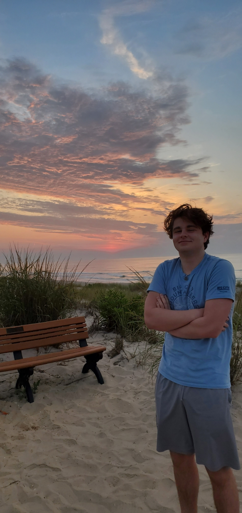

I'm interested in full stack development as a career in my near future. Throughout the course of my studies, I have perfected my understanding of coding languages and interpersonal abilities. I am a capable and consistent problem-solver proficient at prioritizing and managing projects. I am progressive-minded and in tune with new developments in my field. I have proven to be effective and collaborative with strong critical thinking talents.
